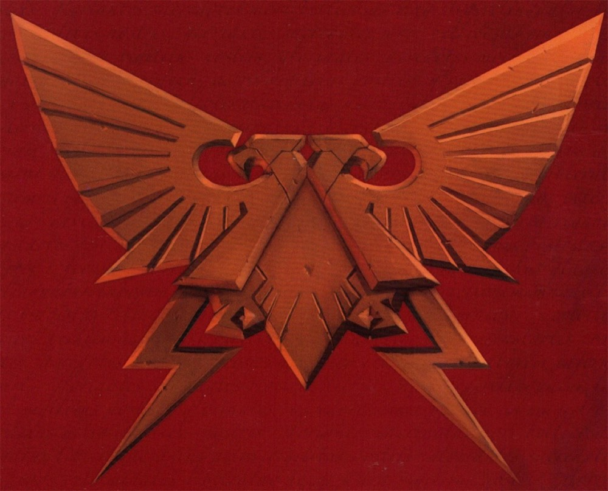
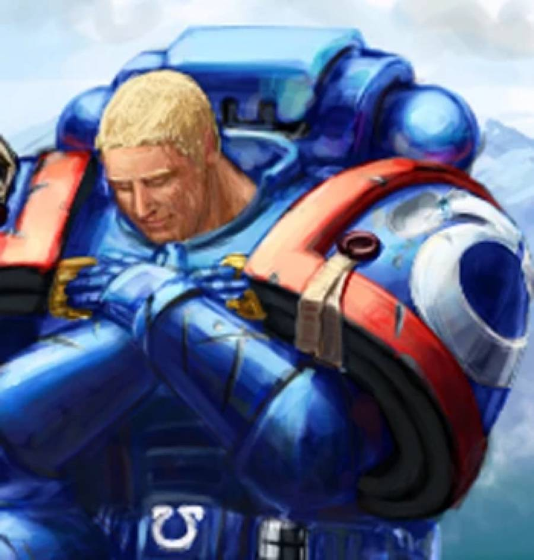

Aquila (symbol)
| Aquila Aquila Imperialis | |
|---|---|
 The Aquila in its common form of the 41st millennium | |
| Type | State emblem; sacred symbol |
| Represents | The Imperium of Mankind and the Emperor of Mankind |
| Adopted | c. 798.M30, start of the Great Crusade |
| Adopted by | Emperor of Mankind |
| Preceded by | Raptor Imperialis (Unification Wars, c. M30) |
| Variants | Palatine Aquila; Imperialis (winged skull); regional and Chapter forms |
| Religious status | Holy symbol of the Imperial Cult |
| Gesture | Sign of the Aquila |
The Aquila, also called the Imperial Aquila or Imperial eagle, is the double-headed eagle that serves as the emblem of the Imperium of Mankind. It is borne on the armour of the Adeptus Astartes, the uniforms of the Astra Militarum, the prows of Imperial Navy warships, the seals of the Adeptus Terra and the altars of the Imperial Cult, and is stamped on almost every object the Imperium owns, as a mark both of allegiance and of property. The hand gesture that imitates it, the Sign of the Aquila, is the universal salute and greeting of Imperial citizens.[1][2]
The Emperor of Mankind chose the Aquila as his standard at the beginning of the Great Crusade, in about 798.M30, replacing the earlier eagle-and-lightning emblem of the Unification Wars. In the crusade period its two heads were held to signify mankind's past and future. After the Horus Heresy (005–014.M31) and the rise of the Imperial Cult, it came to be interpreted as the union of Terra and Mars, and it is now treated by the Ecclesiarchy as a holy symbol of the Emperor himself.[3][2]
History
[edit]The Raptor Imperialis
[edit]During the Unification Wars on Terra (c. M30), the armies of the Emperor, among them the Thunder Warriors, fought under an emblem of an eagle's head with crossed lightning bolts, known as the Raptor Imperialis or "lightning and eagle". The lightning bolts survive in many later Imperial devices, and the emblem is still used by some regiments and Chapters as an honour badge.[3]
The Great Crusade
[edit]At the start of the Great Crusade, c. 798.M30, the Emperor adopted the double-headed eagle as the banner under which the Space Marine Legions would conquer the galaxy. The crusade-era form, the Palatine Aquila, showed the right-hand head blindfolded and the left-hand head with open eyes: the blind head looked back to the lessons of mankind's past, the sighted head forward to the future the Emperor would build.[3][4]

The Palatine Aquila was the Emperor's personal standard. During the compliance of Proxima, when insurgents attacked the Emperor and his honour guard on the ceremonial plaza, a cohort of the III Legion, the Emperor's Children, fought to the last warrior beside the Legio Custodes to protect him. In recognition, the Emperor gave that Legion the standard they had defended and the sole right to bear the Palatine Aquila in their heraldry. They kept that honour until their fall to Slaanesh during the Horus Heresy.[5][a]
After the Heresy
[edit]Following the Heresy, the right to bear the Aquila was extended to all the loyal Space Marines, and the eagle became the common emblem of every Imperial institution. As the Imperial Cult became the state religion in the 32nd millennium, the meaning of the two heads was reinterpreted. Ecclesiarchal teaching now holds that they represent the Imperium's two halves, Terra and Mars, bound together by the Treaty of Olympus; other traditions read them as the Emperor's watch over the Imperium and over the Warp, or as the secular and spiritual authorities of the state.[2][3]
The Era Indomitus
[edit]Roboute Guilliman, returned in 999.M41, is one of the few living witnesses to the crusade-era meaning of the emblem. The Logos Historica Verita, which he founded to recover the Imperium's history, records both the crusade and the later interpretations; the Ecclesiarchy has not changed its teaching.[6]
Forms and variants
[edit]- Imperial Aquila: the common form, a double-headed eagle with spread wings, often with a skull, a crown or the letter I on its breast.
- Palatine Aquila: the crusade-era form with one blind head, now rarely seen.
- Imperialis: a winged skull, first used in the Horus Heresy by loyalist Legions and the Imperial Army as a badge of bravery and loss. Since the Second Founding (c. 021.M31) many Space Marine Chapters have borne it in place of the eagle, a choice often said to express their different relationship with the Emperor, whom many Chapters honour as the greatest of men rather than worship as a god.
- Chapter and regimental forms: countless local variants combine the eagle with a unit's own heraldry.
Use
[edit]Military
[edit]The Aquila is borne on the chestplate of nearly every suit of Space Marine power armour and is stamped on Imperial weapons and vehicles at the forge worlds. All troops of the Astra Militarum are required by regulation to salute it; in the field codes of the Departmento Munitorum, failure to do so is punished by branding of the left cheek and court-martial.[7]
Religious
[edit]To the Imperial Cult, the Aquila is the most sacred symbol after the image of the Emperor himself. It surmounts the altars and spires of Imperial churches, is carried in processions, and is worn as a pendant by the faithful. Desecrating an Aquila is heresy on most Imperial worlds.[2]
Civil
[edit]The Aquila is the seal of the Adeptus Terra and appears on the signet rings of Imperial officials, on Throne Gelt coinage and on official documents. It marks Imperial property: a building, ship or crate bearing it belongs to the Imperium.[1]
Sign of the Aquila
[edit]
The Sign of the Aquila is made by placing the hands flat on the chest with the thumbs interlocked, so that the thumbs form the eagle's heads and the fingers its wings. It is usually accompanied by a nod or a slight bow. It serves as a salute, a blessing, a greeting and a farewell, and is the safe form of address when a person's rank or the correct etiquette is unknown. In the Ultima Segmentum, a related gesture called "thumbing the palm", a thumb pressed into the opposite palm to form one wing, is used to ward off misfortune.[7][1]
Timeline
[edit]| Date | Event |
|---|---|
| c. M30 | Raptor Imperialis carried in the Unification Wars |
| c. 798.M30 | The Emperor adopts the Aquila for the Great Crusade |
| Late M30 | Palatine Aquila granted to the Emperor's Children after Proxima |
| 014.M31 | End of the Heresy; the Aquila extended to all loyal Legions |
| c. 021.M31 | Second Founding; Imperialis adopted by many Chapters |
| M32 | Imperial Cult reinterprets the two heads as Terra and Mars |
| 999.M41 | Return of Roboute Guilliman, a witness to the crusade-era meaning |
See also
[edit]Notes
[edit]- ^ The date of the Proxima compliance is not recorded in the reconciled chronology. It took place during the early Great Crusade, before the rediscovery of Fulgrim; the Logos Historica Verita places it in the first decades of the crusade, c. 800–830.M30 (date estimated from the sequence of events).
References
[edit]- ^ a b c Codex Imperialis (rev. 980.M41). Adeptus Terra.
- ^ a b c d Liber Ecclesiasticus (M37). Adeptus Ministorum.
- ^ a b c d Glossaria Crusadis (003.M42). Logos Historica Verita, Terra.
- ^ Sindermann, Kyril (c. 004.M31). Remembrances of the 63rd Expedition. Remembrancer Order.
- ^ Liber Primarchus (M32, revised M41). Administratum Archive, Terra.
- ^ Records of the Indomitus Crusade (ongoing). Office of the Lord Commander.
- ^ a b Imperial Infantryman's Uplifting Primer (rev. 990.M41). Departmento Munitorum.